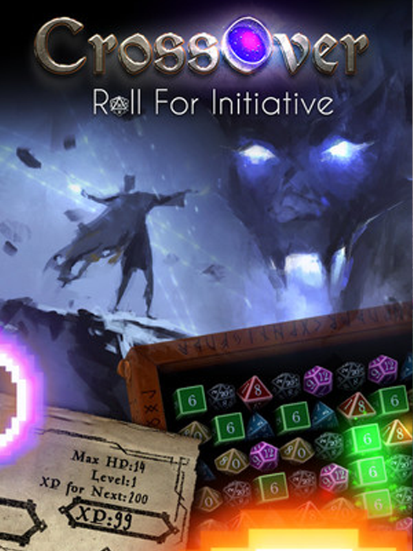

CrossOver: Roll For Initiative
CrossOver: Roll For Initiative
Details
|  | |
| Playtime | 2h 23m 0s |
| Last Activity | 2024-07-13 0:10:57 |
| Added | 2024-07-11 10:25:17 |
| Modified | 2024-07-11 10:25:33 |
| Completion Status | Played |
| Library | Steam |
| Source | Steam |
| Platform | PC (Windows) |
| Release Date | |
| Community Score | |
| Critic Score | |
| User Score | |
| Genre | Indie Role-playing (RPG) Strategy |
| Developer | Gaterooze, Ink MicroProse Software, Inc. |
| Publisher | MicroProse Software, Inc. |
| Feature | Co-Operative Multiplayer Single Player |
| Links | Steam Discord Official Twitch |
| Tag | |
Description
It's late at night in your 80’s bedroom, and a weird energy fills the air, making your “G64” computer flicker oddly. Brushing it off, you roll up a character sheet for the tabletop roleplaying games on your shelf. Before you finish, dark portals appear on your desk and little pixel creatures cross over into our world! Defend your character through the stages of each campaign book - whether it’s all in your head or not!

A Unique Gameplay Hybrid: CrossOver takes some classic concepts from traditionally “casual” genres (Match 3 and Tower Defence) and crosses them into a new and eccentric hardcore challenge with Strategy, RPG and Puzzle elements. Co-op is uniquely asymmetrical, with one player controlling the dice and the other handling the attacks.

A Deep Challenge: The main campaigns include shops to buy armor and items, RPG progression (earn XP, level up, increase stats), dozens of spells and weapons to find, and mercenaries to hire. Random encounters appear between stages with Fighting Fantasy book style choices. Earn persistent gems to unlock more classes/races (15 of each in the game) or trade in for extra gold during any campaign. Try your hand at the Solo and Co-Op Endless Modes to challenge the Online Leaderboards!

A Wealth Of Content: The overall game is made up of multiple Game Modules in various genres - Fantasy and Sci-fi at first, with others such as WWII, Modern Warfare, Cthulian, etc that may become available later as DLC expansion modules. Each Game Module has 7 Campaign Books (each with several Stages to complete), a procedurally generated Endless Mode with Online Leaderboard, several Co-op Challenges and a Co-op Endless Mode. A beautiful art gallery is unlocked for each campaign, and there is even a full hidden game with its own Online Leaderboard.

Casual Mode
For those who prefer a more relaxed gameplay experience, Casual Mode offers a way to enjoy the rich world of "CrossOver: Roll For Initiative" without the intense pressure of hardcore challenge. When toggled on, Casual Mode reduces the damage dealt by enemies to a selectable percentage, allowing players to focus more on chill enjoyment than frantic survival. Additionally, Deterrents (which act as a pseudo time limit) are disabled, enabling you to grind at your leisure for gold and experience points before finishing a stage.
Casual Mode is available exclusively for campaign play and cannot be used in other modes such as Endless, Dice Defense or Co-op Scenarios. Players can toggle Casual Mode on or off at any point during a campaign without needing to restart, offering the flexibility to adjust the difficulty to their preference as they progress.
Whether you're new to the game or just looking for a more laid-back adventure, Casual Mode ensures that "CrossOver: Roll For Initiative" remains accessible and enjoyable for all types of players.
A Unique Gameplay Hybrid: CrossOver takes some classic concepts from traditionally “casual” genres (Match 3 and Tower Defence) and crosses them into a new and eccentric hardcore challenge with Strategy, RPG and Puzzle elements. Co-op is uniquely asymmetrical, with one player controlling the dice and the other handling the attacks.
A Deep Challenge: The main campaigns include shops to buy armor and items, RPG progression (earn XP, level up, increase stats), dozens of spells and weapons to find, and mercenaries to hire. Random encounters appear between stages with Fighting Fantasy book style choices. Earn persistent gems to unlock more classes/races (15 of each in the game) or trade in for extra gold during any campaign. Try your hand at the Solo and Co-Op Endless Modes to challenge the Online Leaderboards!
A Wealth Of Content: The overall game is made up of multiple Game Modules in various genres - Fantasy and Sci-fi at first, with others such as WWII, Modern Warfare, Cthulian, etc that may become available later as DLC expansion modules. Each Game Module has 7 Campaign Books (each with several Stages to complete), a procedurally generated Endless Mode with Online Leaderboard, several Co-op Challenges and a Co-op Endless Mode. A beautiful art gallery is unlocked for each campaign, and there is even a full hidden game with its own Online Leaderboard.
Casual Mode
For those who prefer a more relaxed gameplay experience, Casual Mode offers a way to enjoy the rich world of "CrossOver: Roll For Initiative" without the intense pressure of hardcore challenge. When toggled on, Casual Mode reduces the damage dealt by enemies to a selectable percentage, allowing players to focus more on chill enjoyment than frantic survival. Additionally, Deterrents (which act as a pseudo time limit) are disabled, enabling you to grind at your leisure for gold and experience points before finishing a stage.
Casual Mode is available exclusively for campaign play and cannot be used in other modes such as Endless, Dice Defense or Co-op Scenarios. Players can toggle Casual Mode on or off at any point during a campaign without needing to restart, offering the flexibility to adjust the difficulty to their preference as they progress.
Whether you're new to the game or just looking for a more laid-back adventure, Casual Mode ensures that "CrossOver: Roll For Initiative" remains accessible and enjoyable for all types of players.